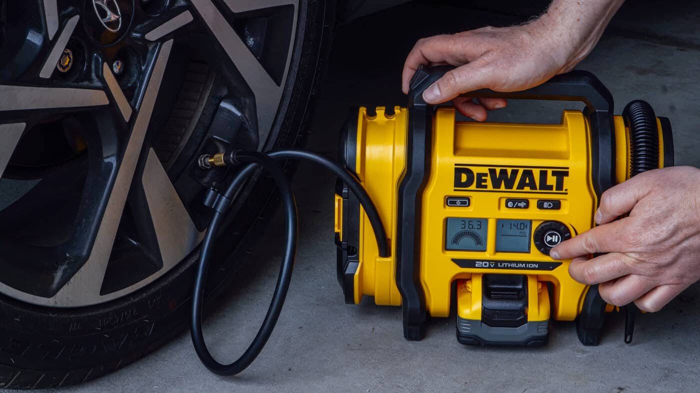
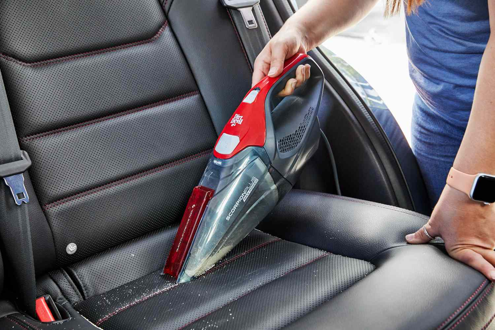
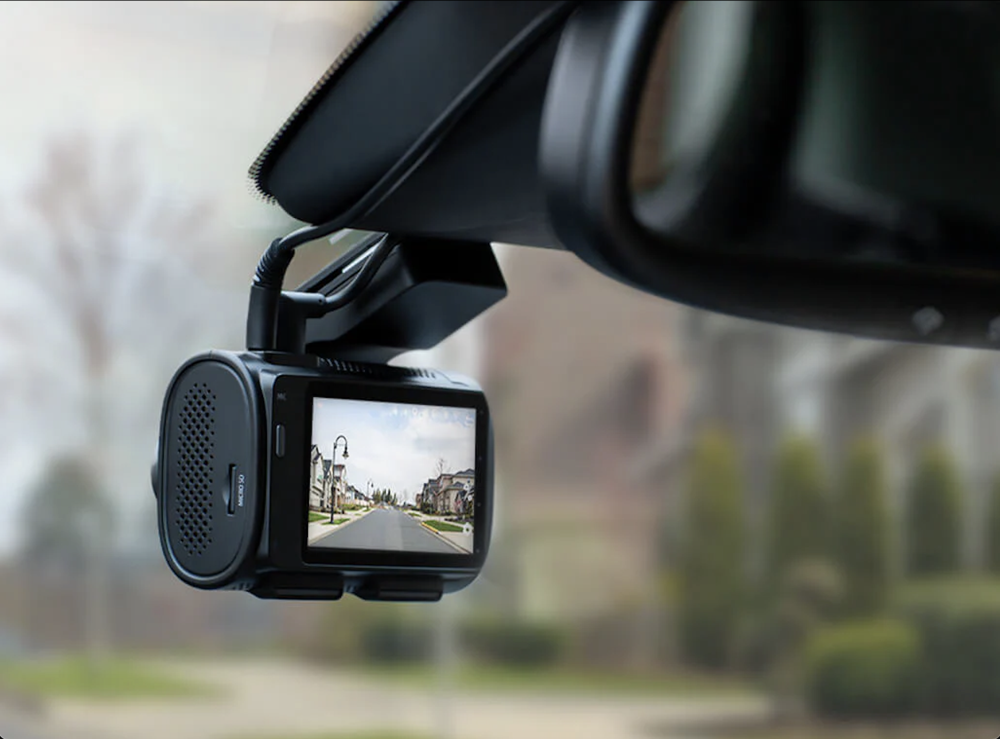

Whether you're a seasoned driver or a new car owner, we provide expert tips, must-have accessories, and essential maintenance guides to keep your vehicle in top shape.From improving performance to enhancing comfort and safety, we cover it all. Explore our collection of automotive insights and gear up for a smooth and hassle-free driving experience!
Four Auto Essentials
Click on the Images above to know more about the products in the picture above
Where to buy Automotive Products online?
Automotive products online refer to a wide range of car accessories, tools, and parts available for purchase through e-commerce platforms. These products include everything from essential maintenance items like engine oils, filters, and batteries to accessories such as floor mats, seat covers, and car organizers. Online stores also offer performance parts, car electronics, and safety equipment like dash cams, tire inflators, and jump starters. Shopping for automotive products online offers the convenience of browsing a wide selection, comparing prices, and having items delivered directly to your doorstep. Whether you're looking to upgrade your vehicle, perform routine maintenance, or enhance comfort and safety, online retailers provide an extensive variety of automotive products to suit every need.
Why are these items so important ?
Automotive products are crucial for several reasons, primarily for maintaining vehicle safety, performance, and convenience. Here's why these items are important:
Safety: Items like tire inflators, jump starters, and dash cameras play a key role in ensuring the safety of both the driver and passengers. Tire inflators help avoid the risk of driving with under-inflated tires, while jump starters provide peace of mind in case your car battery dies. Dash cams offer protection by recording accidents or road incidents, which can be invaluable for insurance claims or legal situations.
Performance and Longevity: Regular maintenance products such as engine oils, filters, and batteries are essential for keeping a car running smoothly. These items ensure that the engine operates efficiently, reducing wear and tear and extending the lifespan of the vehicle.
Convenience: Automotive accessories like car phone mounts, seat covers, and floor mats provide comfort and make the driving experience more enjoyable. They help keep the car organized, protect the interior, and allow for easier use of technology on the go.
Cost-Effective: Having the right automotive tools and products, such as maintenance kits or performance parts, can save you money in the long run by preventing costly repairs and breakdowns. Regular upkeep with these products can avoid more severe issues down the line.
Customization and Aesthetics: Automotive products allow owners to personalize their vehicles to suit their style, whether it’s through exterior accessories, custom seat covers, or interior upgrades. These products enhance the overall aesthetic and experience of driving.
In summary, automotive products are not only important for maintaining the functionality of a vehicle but also for ensuring safety, improving the driving experience, and preserving the car's value over time.